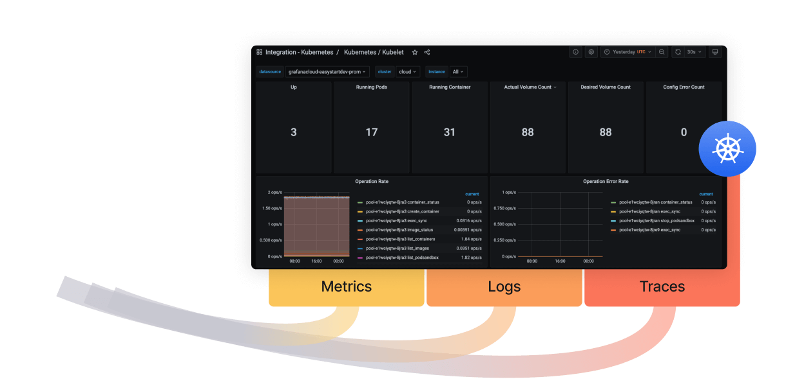
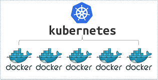

What I Do

CI/CD Pipeline and Automation
A software development practice using tools where developers regularly integrate code into a shared repository and then automated processes test, build, and deploy software updates to production.
Monitoring Resources
Practice of tracking and observing the performance, health, and status of software applications and systems to ensure they are running efficiently and effectively.


Cloud Infrastructure Management
In a cloud infrastructure, customers can access and use these resources on-demand over the internet, without having to invest in, maintain, and manage the underlying physical infrastructure themselves
Containerization Management
Containerization is a technology for packaging and deploying applications as containers. A container is a lightweight, standalone, and executable software package that includes everything needed to run a piece of software, including the code, a runtime, libraries, environment variables, and config files.
